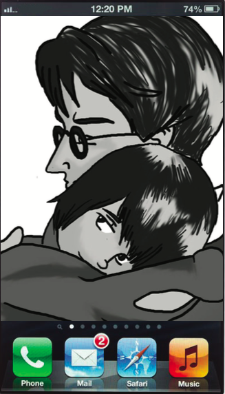

Choose one of the characters from a book you read and complete the three steps to show what would be on this person's cell phone. Be sure your answers are written in complete sentences.
Sketch the charaster's cell phone wallpaper with colored pencils. Then, explain why this image choice would appeal to this character.
This was a photo that Jem snapped of Scout and her father when they weren't looking. It's Scout's favorite photo, so she made it her wallpaper/screensaver. Scout idolizes her father, Atticus Finch, and this rare moment of tenderness from him reminds her every day that he loves her and will always provide a safe, comforting place when the trials of the world leave her feeling weary.
This character just received two messages. Thinking back over the reading, explain which other characters just sent messages to this character and what is the content of each message.
Scout just received two messages, one from Calpurnia and one from Dill. Calpurnia wants to know where Scout is because she was supposed to be home two hours ago. Dill sent his message to let Scout know that his mom is going to allow him to leave early to vacation at Aunt Rachel's house for the next school holiday. He wants to make sure that Jem and Scout will be there when he arrives.
Write three song titles with artists' names that would likely be on this character's playlist. Be sure to explain your reasoning as to why these three songs would appeal to this character.
1. "Why Can't We Be Friends?" by War
Scout doesn't understand why different classes of people can't be friends. For example, her failed attempt to befriend Walter Cunningham leaves her perplexed.
2. "Just a Girl" by No Doubt
Scout wants to resist Aunt Alexandra's attempts to feminize her and this anthem of girl power and questioning of traditional gender expectations is fitting for Scout.
3. "Waiting on the World to Change" by John Mayer
In the Jim Crow South of Scout's childhood, it seems like there's little she can do to evoke a positive social change. This, of course, isn't true. One person, we discover, has the power to change the hearts and minds of many people.